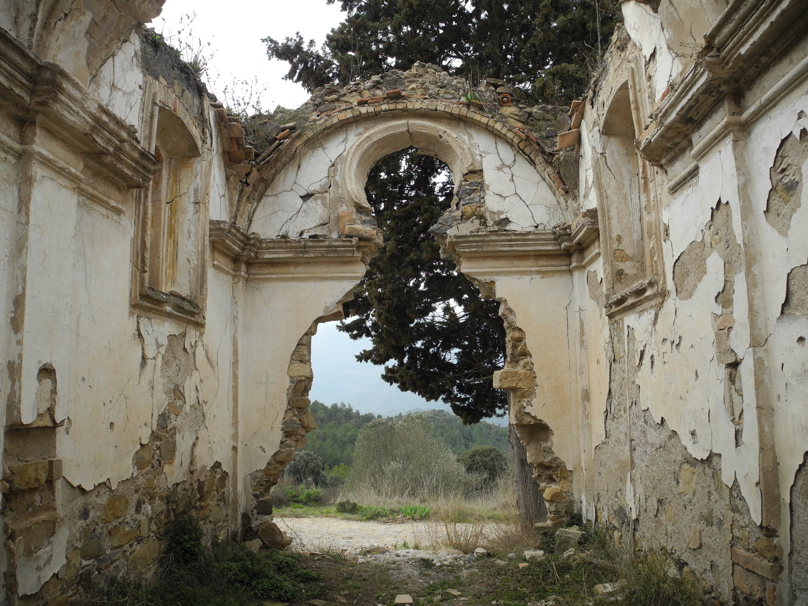
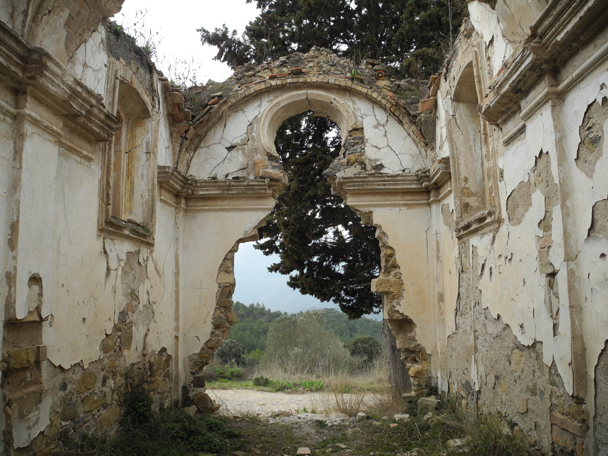
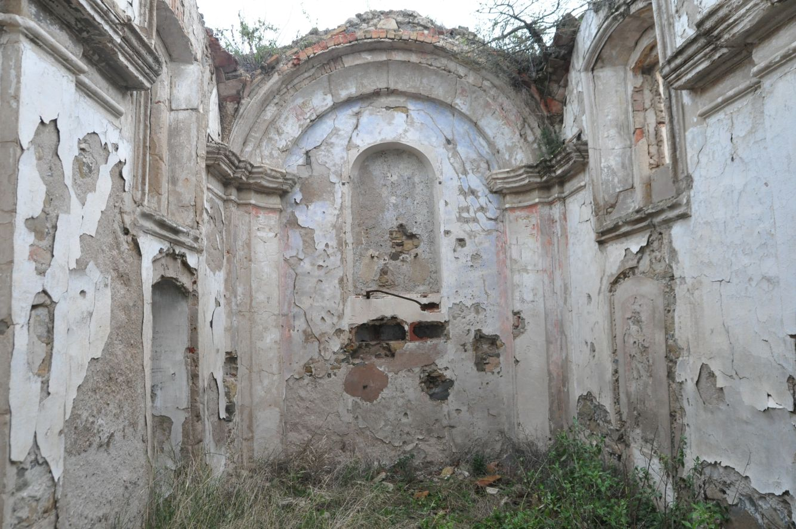
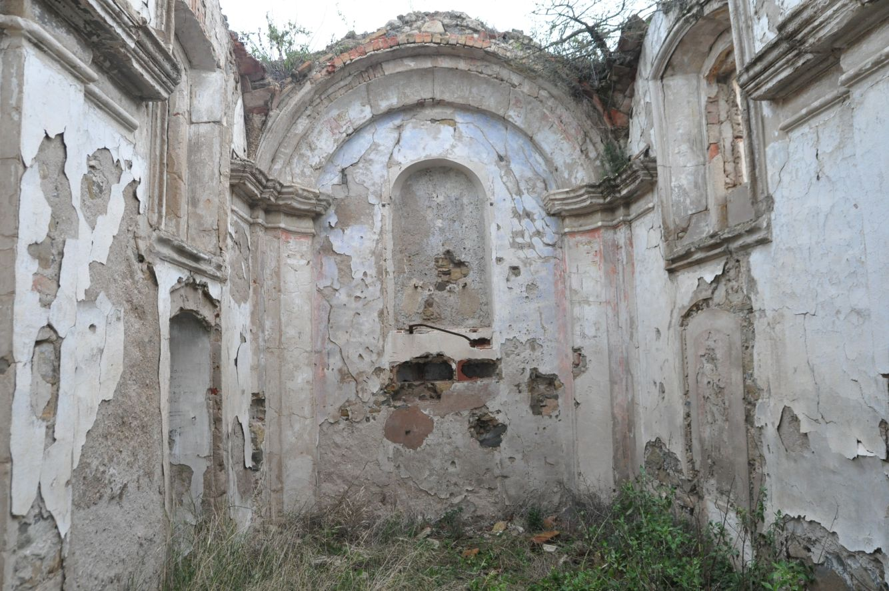
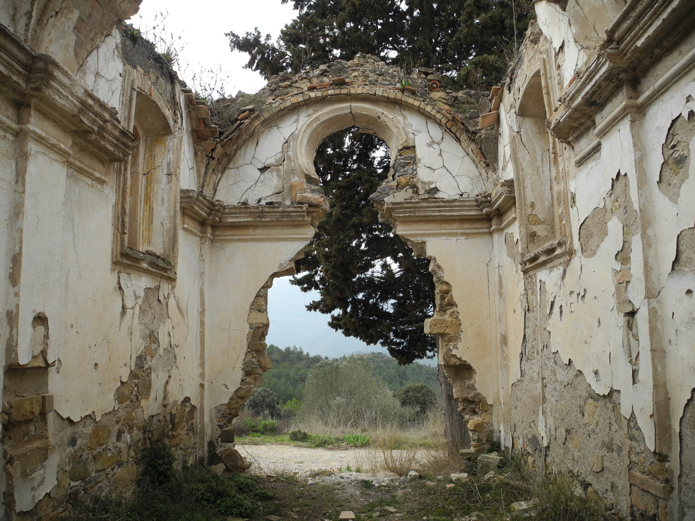
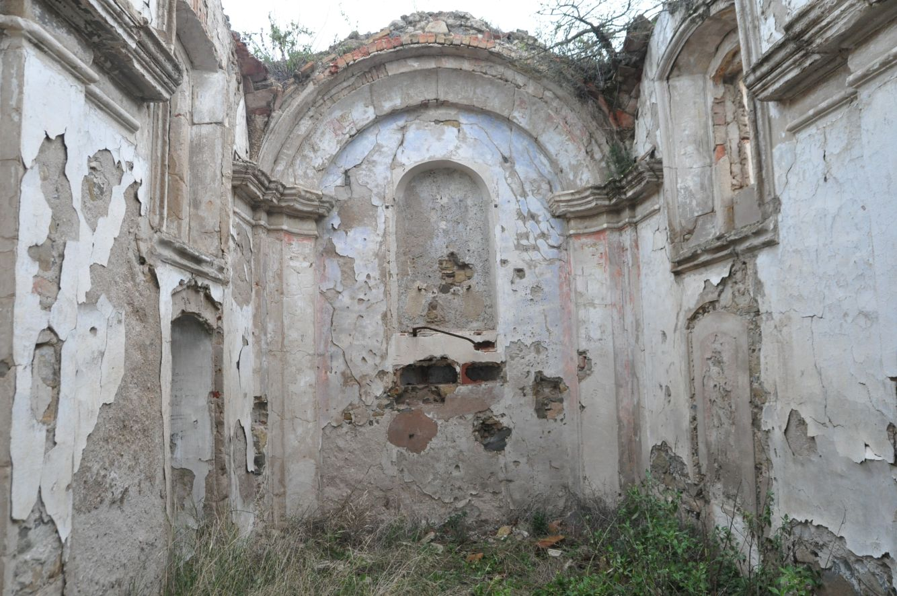

 

L'actual masia de Viladoms de dalt (Castellbell i el
Vilar) és un edifici amb orígens medievals, que
remunten al s. XIV.
Avui dia es troba en un estat desolador, abandonat i
ruïnós. Ha patit diferents espolis, especialment els
darrers anys, i és trist viure el procés de desaparició
d'aquesta masia.
Ubicat a l'est del terme de Castellbell i el vilar i
construït sobre la serra d'un turó, té el privilegi de
la perspectiva de la Muntanya de Montserrat per una
banda i l'esplanada del Bages i part del Vallés Occidental per l'altre.
El nom original del mas era mas Llevàllol sobirà, que es fa constància en un capbreu de 1328. Fou a
partir
de 1652, que el nou propietari, Pere Viladoms, va propiciar el nom que avui dóna raó
al mas.
En el document del s. XIV es citen dos masos Llevàllol: el Jussà i el Sobirà. Per la
situació elevada d'aquest mas, donem per assentat que parlem del sobirà. De l'altre
mas, que fa constar en aquest capbreu, no hi ha recerca documentada de la seva
situació. Podem pensar en el mas de Viladoms de baix com a possible Llevàllol Jussà,
que la família Viladoms va comprar a mitjans del s. XVII.
Al 1907 els propietaris marxen a la ciutat i el mas queda en mans d'uns masovers, per
tal que en tinguin cura. Va ser en 1950 que és comprat novament. Aquesta vegada
per un constructor, Fidel Puig, amb intenció de fer un restaurant i una urbanització al
voltant, amb el nom d'El Tirol de Montserrat. El projecte no va fer endavant.
Després de treure les teulades, la degradació i el reiterat espoli, accentuat pel petit tresor trobat a
la casa
veïna de Les Comes, portà a la realitat que trobem actualment. Les parets han estat picades i maltretes
per aquests grups de saquejadors que sense cap mirament destruïren parets, sostres i terres.
Estructuralment, es conserven els murs que delimitaven la construcció en la seva cimentació, bàsicament
en molt mal estat. També d'altres parts arquitectòniques com una portalada de pedra i les dues arcades
del celler, així com altres dependències pròpies d'un mas amb aquestes dimensions. Menció especial al
preciós mosaic o rosa dels vents situat al pati central.
En un lateral hi ha la capella rural dedicada a Nostra Senyora de Montserrat. Aquesta devia ser un espai
de culte privat per a la pròpia família, com era habitual en famílies adinerades.
El Barroc rural català i religiós va ser propi i destacat en les grans masies de l'època.
Era símbol inequívoc de la puixança burgesia rural, de l'increment en la població i
de la productivitat en el camp. És una època de la història en la qual desapareixen
les masies fortificades, els masos amplien les seves dependències, amb la figura de
l'hereu o llinatges familiars, i es decoren amb intensitat els seus interiors com a
mostra de ben estança.
Malauradament, avui dia, el seu estat és molt desastrós. Sense teulada ni bigam,
les parets mig caigudes, només podem apreciar petits matisos de les pintures
murals que devien decorar profusament les seves parets. La capella és d'estil
barroc, propi del s. XVIII, voladures, frisos, motllures, fornitures, corbes i el·lipses,
devien formar part d'aquest escenari tan característic.
La capella, d'una única nau, estava adossada per un dels seus laterals al mas. Per les restes que podem
apreciar, la teulada exterior deuria ser de teula àrab i volta de maó pla l'interior. Les parts
interiors devien
estar arrebossades amb calç i pintades amb frescos de colors vius i amb escenes religioses,
característic
del seu estic arquitectònic. La porta principal mira a Montserrat i únicament podem apreciar l’espai del
rosetó.
El nom original donat en 1791 pel capellà de Sant Vicenç de Castellet, va ser Nostra Senyora de la
Concepció. En aquest moment els propietaris eren Caterina Solé i la seva filla Maria Sagristà i Soler.
Més
endavant, la capella s'ha conegut sempre com a Nostra Senyora de Montserrat de Viladoms.
Al costat de la mateixa capella hi ha un Jub d’aglans que
actualment està força be, si el comparem amb la resta del
conjunt de Viladoms de dalt.
A Castellbell i el Vilar diuen d'aquestes construccions "xupets"

